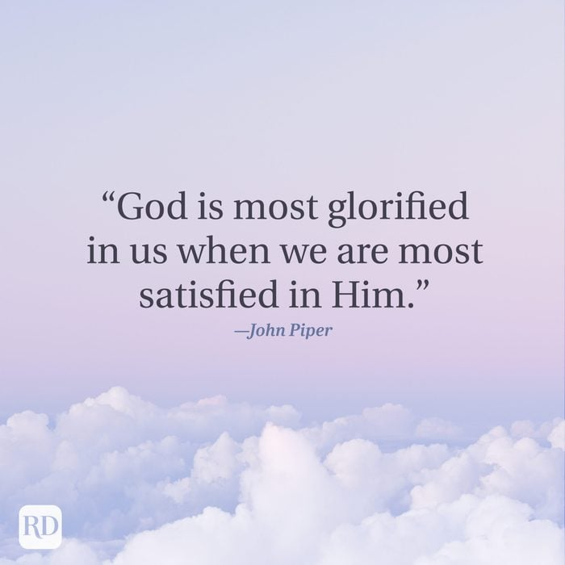
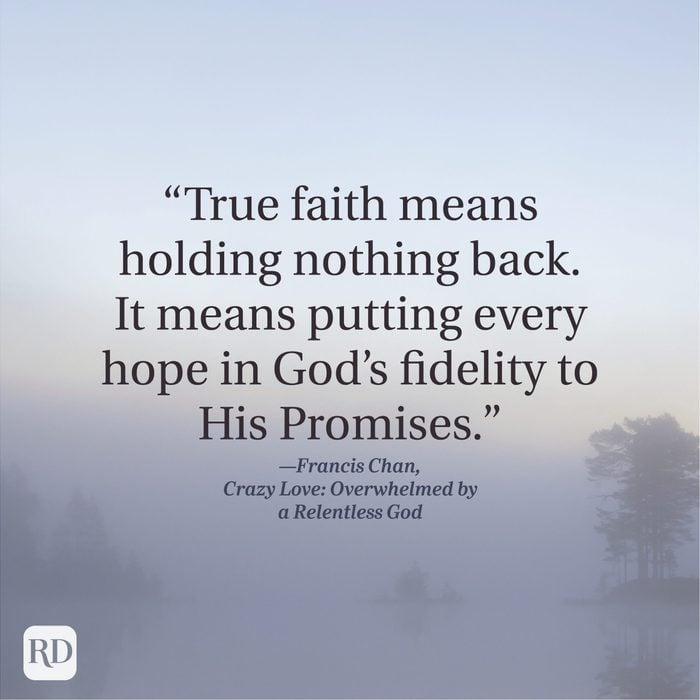
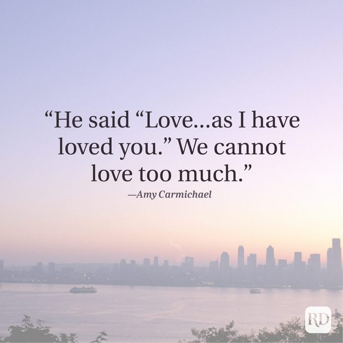
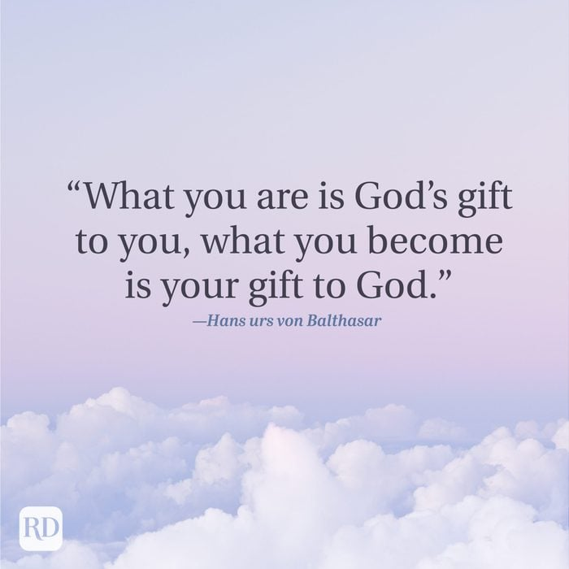
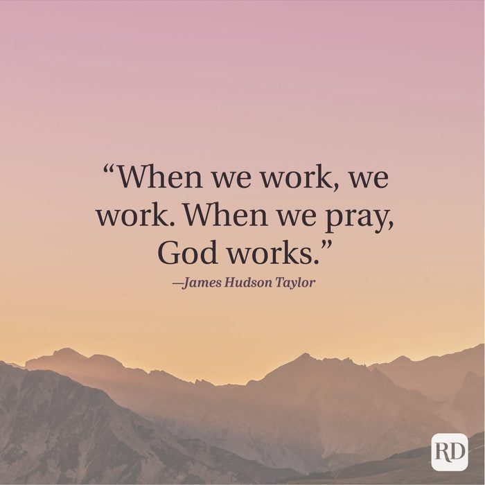

Introduction
Reference
Life can sometimes feel overwhelming, but God’s truth is our anchor in
every storm. These Christian quotes are more than just words – they are
reminders of His unshakable love, grace, and the peace that comes from
walking with Him. I pray that each quote encourages you on your journey.

-
“God is most glorified in us when we are most satisfied in Him”—John
Piper.

-
“True faith means holding nothing back. It means putting every hope in
God’s fidelity to His Promises.”—Francis Chan, Crazy Love: Overwhelmed
by a Relentless God.

-
“He said “Love…as I have loved you.” We cannot love too much.”—Amy
Carmichael. A truly beautiful love quote to reflect on.

-
“What you are is God’s gift to you, what you become is your gift to
God.”—Hans urs von Balthasar. This is one of those uplifting quotes
that’ll stay with you long after you read it.

-
“When we work, we work. When we pray, God works.”—James Hudson Taylor.
"Thank you for taking the time to explore this collection of Christian quotes. I hope these words have brought you encouragement and strengthened your faith.
If you're looking for more inspiring quotes, feel free to visit this Website for more quotes like this. May God continue to bless you and guide you on your journey.
— Emmanuel Finapri"